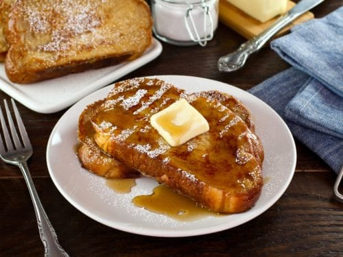

French Toast

Description
For a quick and simple challah french toast. The most important thing is
to use real challah, not a brioche, not an egg bread, but real braided challah.
If you're having trouble finding one, too bad, make it yourself. It is best
served with warm maple syrup, but anything is fine as long as it's not meat.
This recipe calls for dairy, and as the laws of kashrut say, no pig and goat
cheese on the same plate. Or something like that.
Ingredients
- 2 large slices of challah
- 2 eggs
- 1 tbsp sugar
- 4 tbsp milk
- 1 tsp vanilla extract
- a couple shakes of sale
- cinnamon powder for garnish
- cannola oil
Steps
- put nonstick pan on the stove and add desired amount of oil. Enough that
it is visible on all sides of the challah once added to the pan
- Let pan and oil come up to at least 225° F
- While the pan is heating up, mix all ingredients together until homogeneous
- Add the liquid to a baking tin and place challah on top
- Once the challah appears to no longer be absorbing the liquid, add cinnamon
to the dry side, flip it, and occasionally tilt the pan to make sure as much
liquid has been absorbed as possible
- add cinnamon to the side facing up
- Once the pan is up to temperature and the challah is thoroughly soaked,
put the challah on the pan and let cook
- It will be ready to flip when the bottom is a nice golden color, so check
every few minutes, depending on the head of the pan
- Repeat cooking process for the other side until similarly golden
- Remove from heat and serve, best eaten immediatly